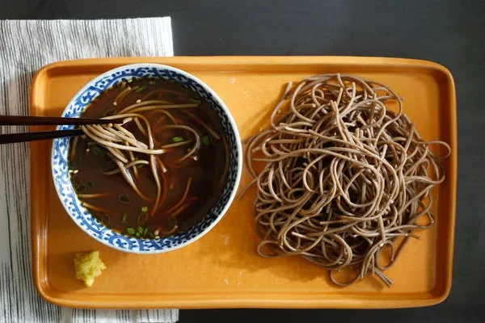

Soba

What is a delicious Soba ?
Soba is a traditional Japanese noodle dish made from buckwheat flour. These thin noodles are often served chilled with a dipping sauce called tsuyu or in a hot broth. Soba is known for its nutty flavor and smooth texture. It's commonly garnished with ingredients like sliced green onions, grated daikon radish, nori seaweed, or tempura. Soba is enjoyed as a refreshing meal during hot summer days or as a comforting dish in colder weather.
Ingredients
- 8 ounces (about 225 grams) of dried soba noodles
- 4 cups of water
- 1/4 cup of soy sauce
- 2 tablespoons of mirin (Japanese sweet rice wine)
- 2 tablespoons of sake (Japanese rice wine) or dry white wine
- 1 tablespoon of sugar
- Optional toppings: sliced green onions, shredded nori seaweed, grated daikon radish, sesame seeds, tempura crumbs, or cooked shrimp or chicken
Steps
- Bring 4 cups of water to a boil in a pot.
- Add the soba noodles to the boiling water and cook according to package instructions, usually about 5-7 minutes, or until they are tender but still firm to the bite.
- While the noodles are cooking, prepare the dipping sauce (tsuyu). In a small saucepan, combine the soy sauce, mirin, sake, and sugar. Heat the mixture over medium heat until the sugar is dissolved, then remove from heat and let it cool.
- Once the noodles are cooked, drain them and rinse under cold water to stop the cooking process and remove excess starch.
- Divide the noodles into serving bowls.
- Serve the soba noodles with the dipping sauce on the side for dipping. Alternatively, you can pour the dipping sauce over the noodles just before serving.
- Garnish the soba noodles with your choice of toppings, such as sliced green onions, shredded nori seaweed, grated daikon radish, sesame seeds, tempura crumbs, or cooked shrimp or chicken.
- Enjoy your delicious homemade soba noodles!